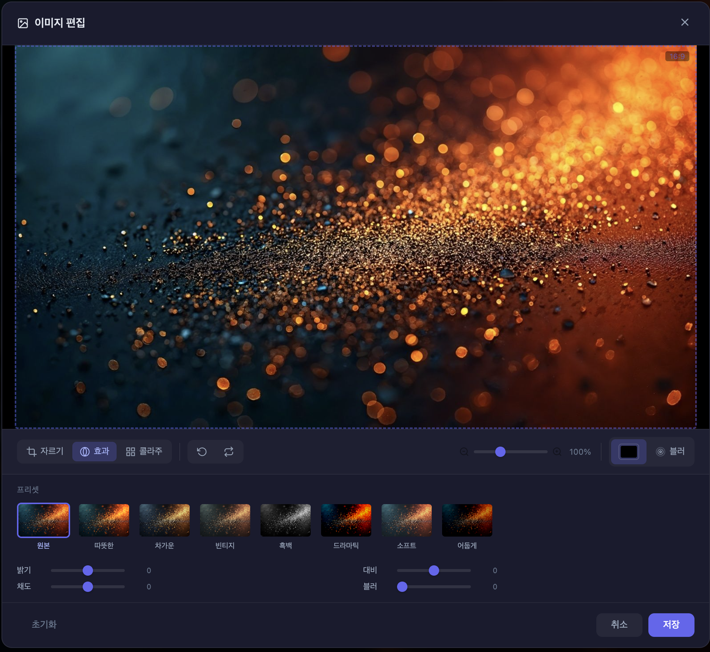

G
What's New in GalpiDock
업데이트 내역과 새로운 기능을 확인하세요
v1.2.0
Latest
2026년 3월

NEW
이미지 편집기
배경 이미지를 자르기, 필터 효과, 밝기/대비/채도 조절, 콜라주까지 — 별도 앱 없이 새 탭에서 바로 편집할 수 있습니다.
screenshot: image-position.png
NEW
배경 위치 조정
이미지 편집기에서 16:9 프레임 안에서 드래그하여 배경 위치를 정밀하게 조정할 수 있습니다. 세로 이미지는 상하, 가로 이미지는 좌우로 이동합니다.
v1.1.0
2026년 3월
screenshot: calendar.png
IMPROVED
Google 캘린더 연동 개선
OAuth 토큰 만료 시 자동 복구, 캘린더 에러 시 위젯 자동 OFF, 재연결 UI가 추가되었습니다.